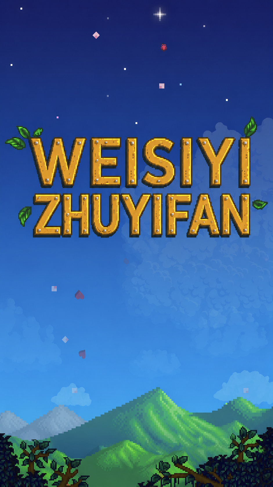
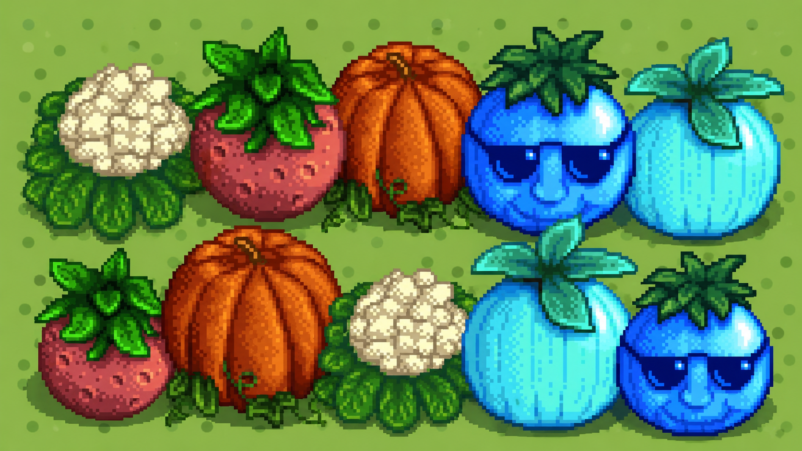

🌻 「第一次春游·向日葵小径」
那天的阳光刚刚好，你笑着递来一束野花，风里有稻草人的歌声。
像素虽然模糊，但你的眼睛藏了整个夏天。
🏕️ 「星露谷夏夜 · 银河露营」
躺在我们亲手搭的帐篷外，数满天的星星，你指着最亮的那颗说是我们的“新农场星”。
蝉鸣和像素风bgm里，第一次听见彼此的心跳。
🎃 「秋收庆典 · 南瓜与誓言」
农场集市上赢了大南瓜，你做成灯笼刻上我们的名字。你说“像素世界里，我们永远是最佳农夫搭档”。
黄昏的余晖染红矮墙，甜蜜在空气里发酵。
❄️ 「冬日雪绒花 · 小酒馆之夜」
星之果实餐吧里，握着热牛奶，窗外雪花飘落。共享一副耳机，听着像素OST，
你第一次轻声说“以后每个冬天都要一起度过”。
🍰 「周年特供 · 像素蛋糕与未来」
一起做的像素风周年蛋糕，甜度超标。你说哪怕1-bit画风，我们的故事也要渲染成最暖的篇章。
周年快乐，我永远的主角。
亲爱的：
打开这本像素回忆录的时候，我们的世界又重叠了一次。鹈鹕镇的四季流转，正如我们共同走过的每一天——从春日第一株蓝莓发芽，到冬夜壁炉里噼啪作响的柴火，你都是我最珍贵的"上古水果"。
在那些8-bit风格的风里，我们曾一起钓鱼、采矿、布置小屋，现实中的喜怒哀乐也因为你变成温暖的存档点。谢谢你为我建造最舒服的"虚拟港湾"，也谢谢每一个早晨和夜晚的陪伴。未来无数个季节，我们还要一起耕地、一起收获，让爱的经验值无限上涨。
"和你在一起，所有平凡日常都染上像素柔光。" ❤️
